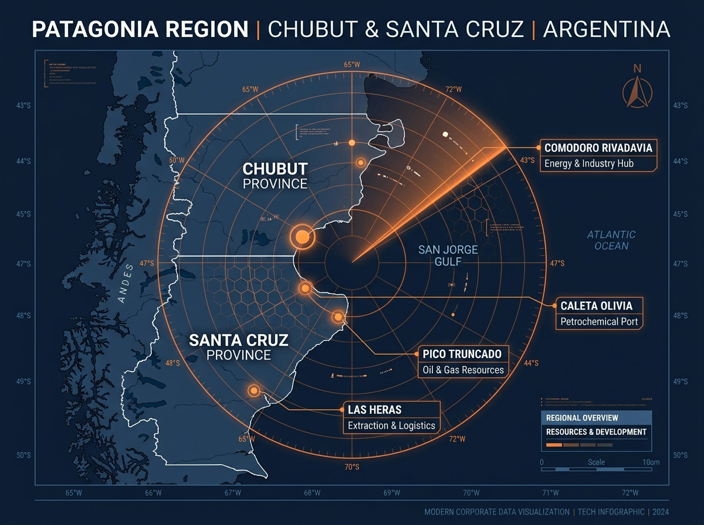

Presencia local y capacidad logística de movilización hacia yacimientos, plantas y puertos patagónicos.
En el mantenimiento de activos críticos, la cercanía geográfica marca la diferencia. Nuestra ubicación estratégica en el Parque Industrial de Pico Truncado (Santa Cruz) nos otorga una ventaja de respuesta ágil en la Cuenca del Golfo San Jorge.
Contamos con flota propia de camionetas, camiones y trailers preparados para movilizar compresores de arenado, andamios, tolvas abrasivas y equipos airless hacia las principales áreas operativas:
